לב העוטף · שדרותדווקא עכשיו עוברים לשדרות
בהפקת
סרטון של 20 שניות לכל שכונה: תקומת ישראל והאקדמיה. כל סרטון הוא רגע אמיתי של זוג צעיר שבוחר בית בשדרות, עם הטקסט שלכם מילה במילה, ובשכונה כפי שתוכננה בהדמיות שלכם. המסמך הזה הוא התסריטים, הדמויות, הלוקיישנים והקופי לאישורכם לפני תחילת ההפקה.
לא פרסומת נדל"ן.
רגע אמיתי של משפחה שבוחרת בית.
שני הסרטונים בנויים על אותו מבנה: הזוג אומר את המשפטים שלכם בקולו, כל יתרון מקבל תמונה אחת ברורה, וקריין סוגר ב"דווקא עכשיו עוברים לשדרות", בכוכבית 8516 ובשורת "מוגש מטעם".
הצופה לא צריך לשמוע עוד רשימת יתרונות. הוא צריך לראות זוג שנראה כמוהו פותח דלת של מרפסת מול השדות, הולך לגן הילדים, יוצא מהרכבת. ואז לשמוע: דווקא עכשיו עוברים לשדרות.
תושבי הדרום בטווח 40 ק"מ מכל המגזרים, שמחפשים בית חדש: משפחות צעירות, זוגות בתחילת הדרך, בוגרי צבא, סטודנטים ותושבים חוזרים. צופים בנייד, לרוב בלי קול, ולכן הסרטון מובן גם מהתמונה ומהכיתובים.
לכל סרטון עמוד משלו: הרעיון, הקופי מילה במילה, בחירת המשפחה, הלוקיישנים לצד ההדמיות שלכם, כרטיס הסיום והתסריט שנייה-שנייה עם סטוריבורד.
אנשים שנראים כמו משפחות מהדרום, אור טבעי של אחר הצהריים ושל בוקר בהיר, מצלמה בגובה העיניים וצילומי רחפן. צבעי השכונה מופיעים בעדינות בלבוש ובגרפיקה: כחול וכתום לתקומת ישראל, כחול ולבן לאקדמיה.
לכל שאלה: מה רואים, למה זה חשוב, ומה צריך מכם. רשמו את השם שלכם, סמנו תשובות ושלחו. התשובות מגיעות ישירות לצוות ההפקה.
סמנו תשובה בכל שאלה (אפשר גם רק חלק, ואפשר להוסיף הערה), ולחצו "שליחת התשובות" בתחתית הדף. אפשר לחזור ולשלוח שוב בכל שלב.
בתיקייה ששלחתם יש שתי הדמיות לתקומת ישראל, והן נראות כמו שתי שכונות שונות: בהדמיה א' בניינים בינוניים עם חיפוי עץ ופארק עם נחל; בהדמיה ב' מגדלים לבנים ובתים עם גגות רעפים אדומים. הסרטון רציף, אז הוא חייב להראות שכונה אחת.
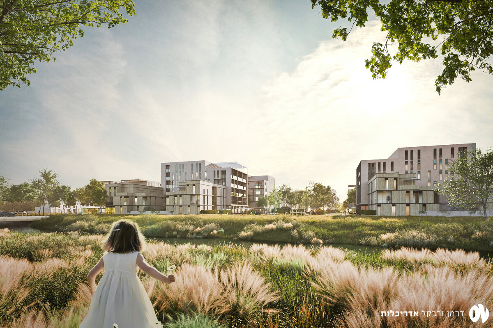
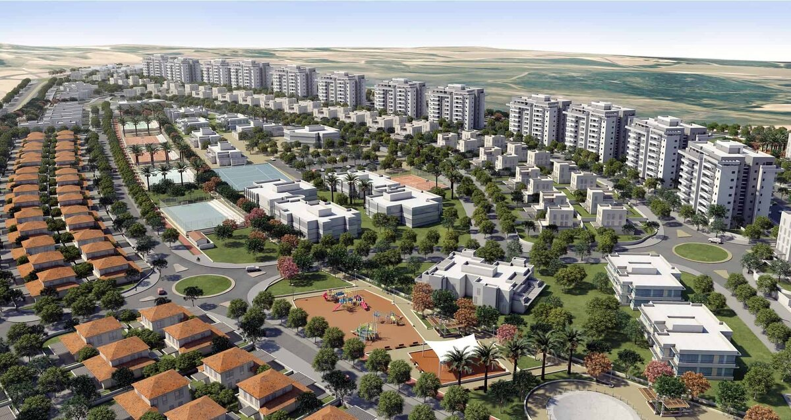
את הרחוב, דירת הגן וגן הילדים של האקדמיה בנינו מההדמיה הזו: אבן בהירה ורפפות עץ.
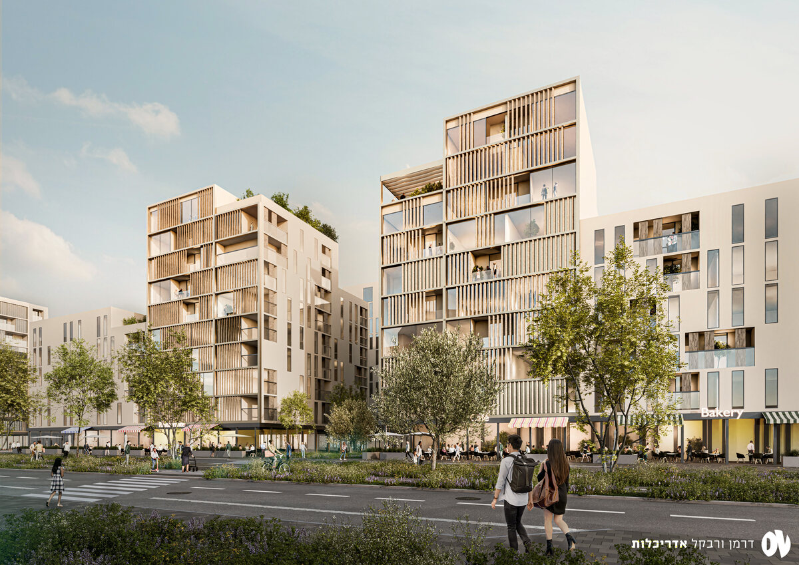
את הדירה מבפנים, גן המשחקים וגן הילדים בנינו בעצמנו, כי לא היו להם הדמיות בערכה. אם יש לכם הדמיות או תוכניות, נבנה לפיהן.


בסרטון השכונה נראית גמורה וחיה, כמו בתמונה משמאל. אם יש כבר בניינים מאוכלסים, נשמח לתמונות אמיתיות כדי שהסרטון יתאים למה שהתושב יראה כשיגיע.
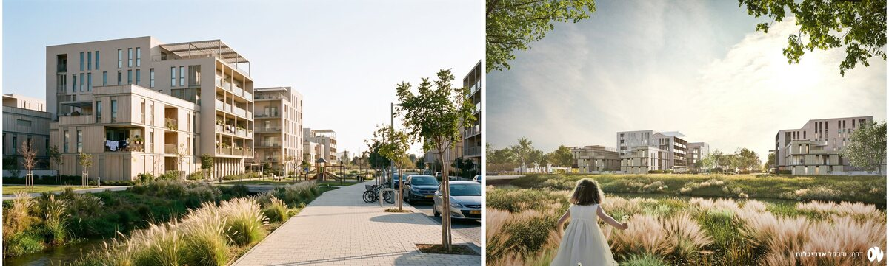
בסרטונים מופיעים: נחל ופארק לינארי, גן משחקים, גן ילדים ברחוב, ונוף פתוח לשדות מהמרפסת. חשוב לוודא שכל אחד מהם באמת בתכנון, ושלא מבטיחים משהו שלא יהיה.
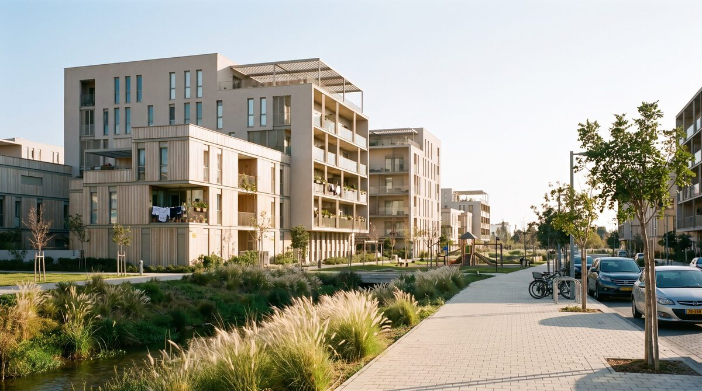
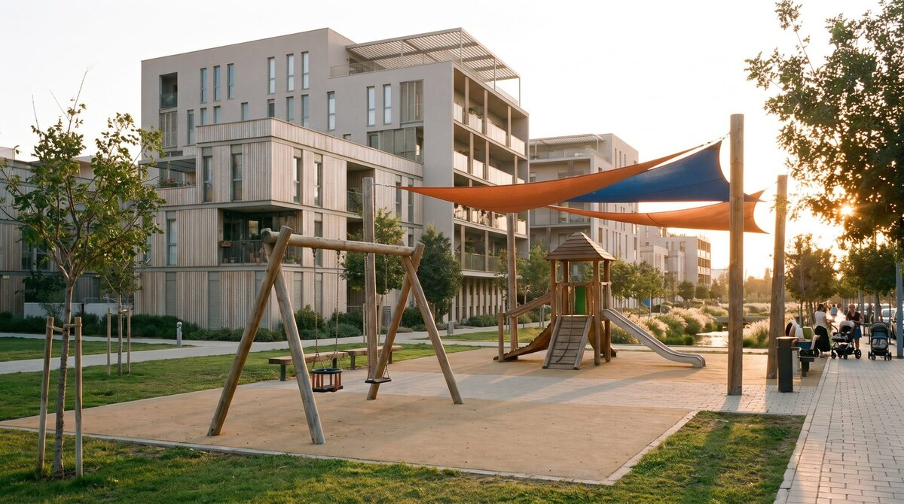
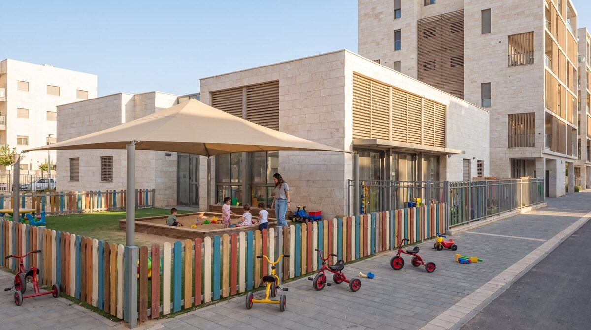
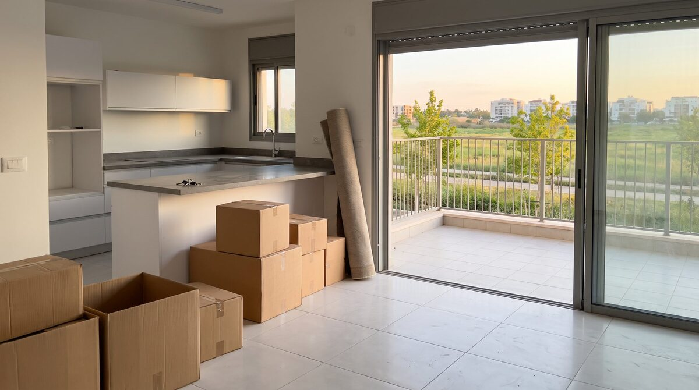
בפרסום נדל"ן נהוג (ולפעמים חובה) לציין שהתמונות הן הדמיה. כך זה ייראה: כיתוב קטן בפינה.
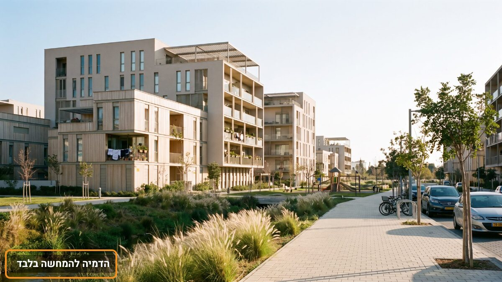
הזוג אומר בסרטון את המשפטים מהבריף שלכם. שלושה מהם הם הבטחה, ולכן חשוב אישור: "הטבות מס משמעותיות", "קרוב לרכבת", "חינוך איכותי".
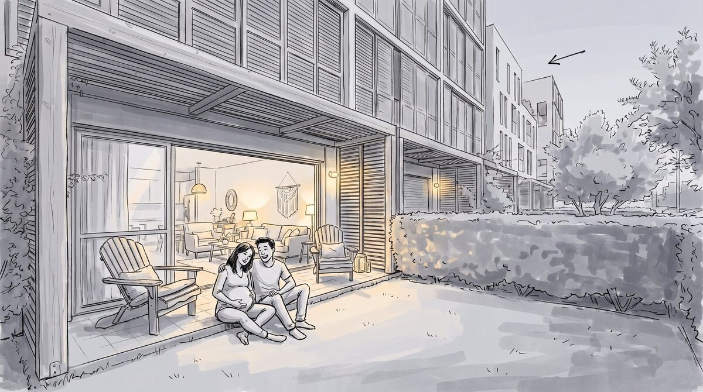
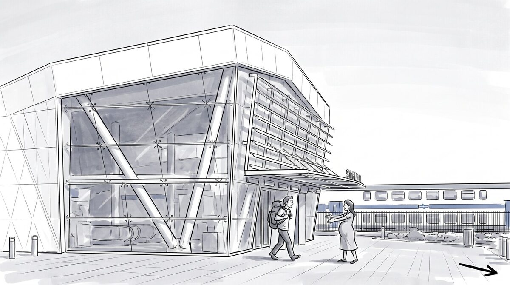
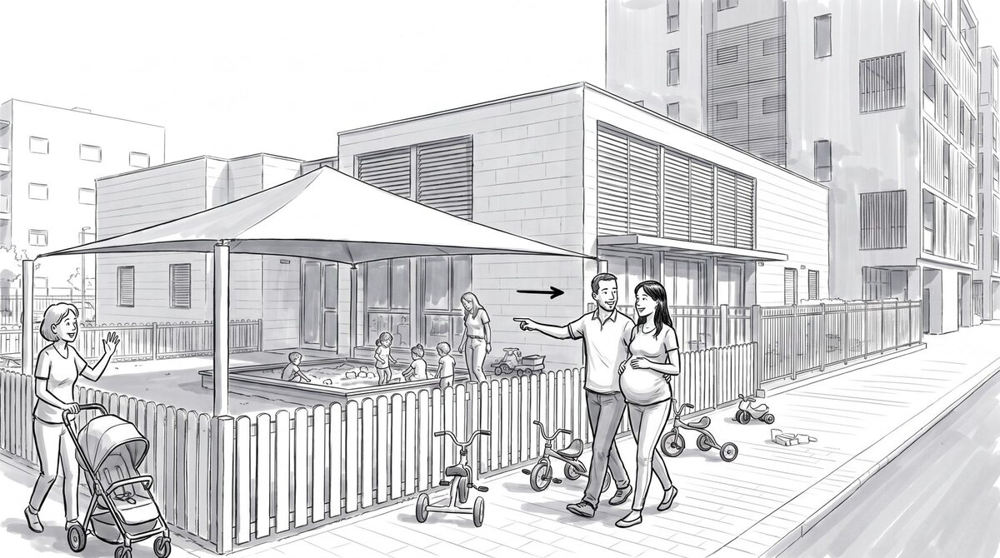
הטקסט שלכם נשמר מילה במילה, אבל לא כולו בקול של קריין: המשפטים האישיים נאמרים על ידי הזוג בתוך הסצנה, והקריין פותח וסוגר.
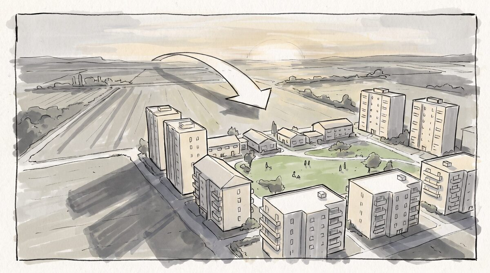
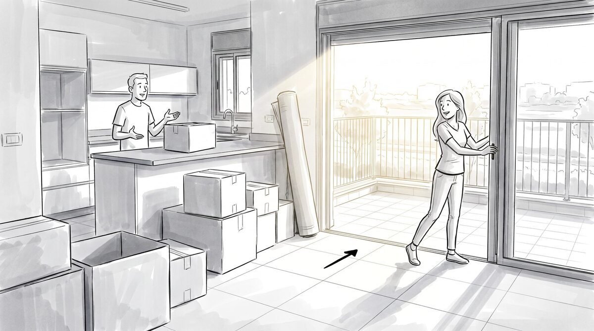
בסרטון של יוני על תקומת ישראל מופיעות שתי ההדמיות מהשאלה הראשונה. אם יש שם תמונה שלא שייכת לשכונה, חשוב שנדע.
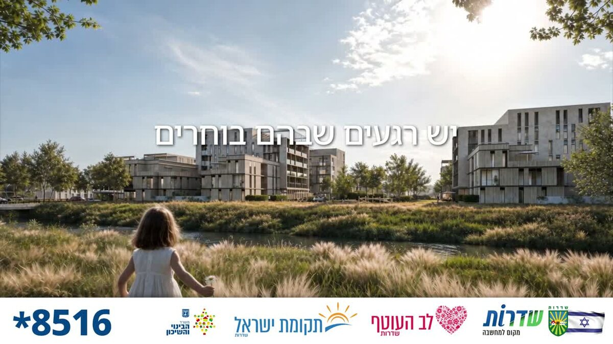
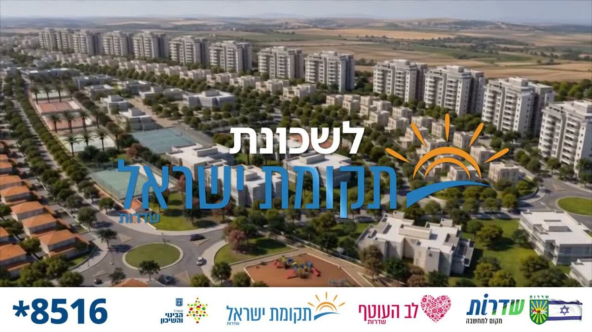
כדי ששני הסרטונים יישמעו כמו הקמפיין הקיים, עדיף אותו קול שהיה בסרטונים מיוני.
כרטיס הסיום בנוי כרגע בפונט זמני. נצטרך את Almoni Tzar ואת ארבעת הלוגואים באיכות גבוהה. וגם: סדר הלוגואים בפס התחתון נכון?
בחוברת המיתוג יש שתי אפשרויות. לפי הבריף (כחול ולבן) בחרנו בכחולה.
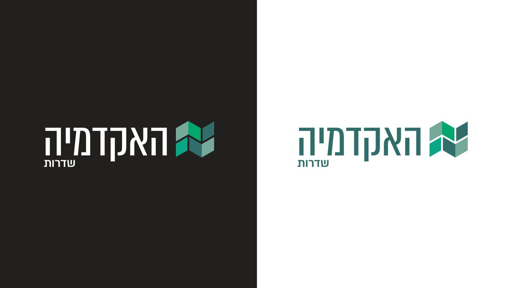
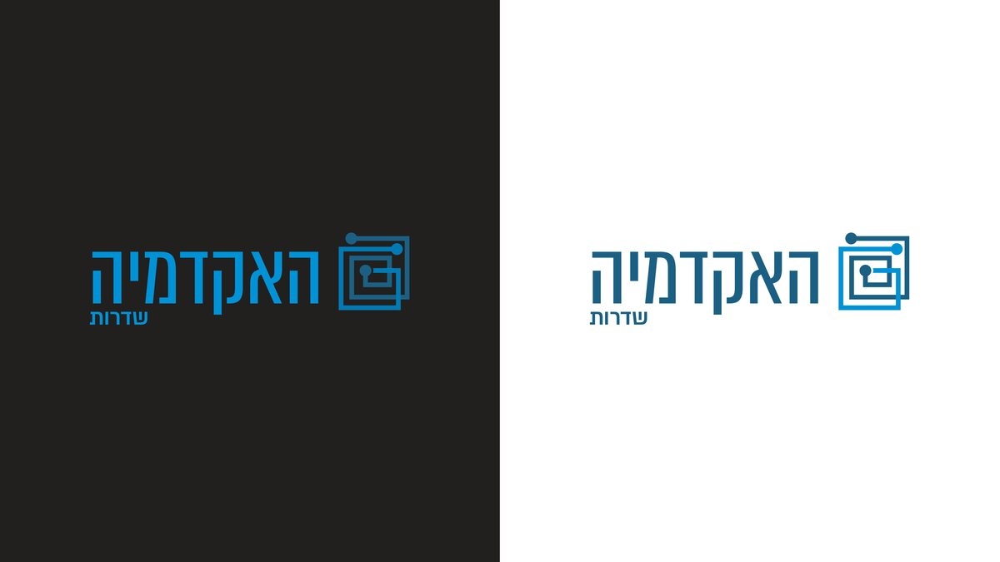
כל פלטפורמה צריכה צורת מסך אחרת. אם רוב הצפייה בטלפון (אינסטגרם, טיקטוק, סטורי), עדיף שהסרטון הראשי יהיה אנכי.
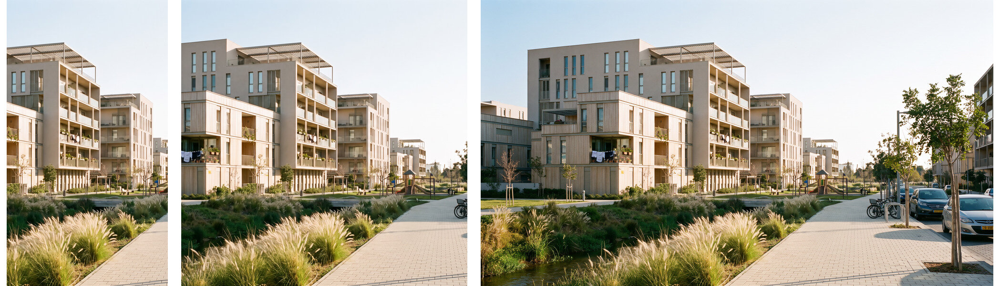
כדי לתכנן את לוח הזמנים: תאריך עלייה, ומי מאשר את התסריטים והסרטונים (העירייה, משרד הבינוי והשיכון או שניהם).
שני הסרטונים מופקים דרך Efect, בהובלת אוראל לוי: קריאטיב, תסריט, בימוי, יצירת הדמויות והשכונות, עריכה, קול, מוזיקה וגרפיקה, עד סרטונים מוכנים לפרסום.